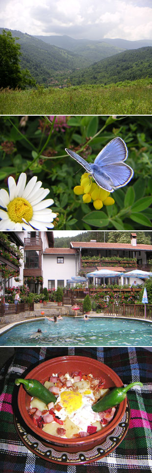

Balkanske teme i drame
Knjiga 'Imaginarni Balkan' Marije Todorove prvi put je objavljena 1997. na engleskm, a na srpski je prevedena 1999. Bio je to prvi prevod ove knjige, i pojavio se tačno nakon bombardovanja Srbije. Što će reći u jednom potpuno odvratnom, bezidejnom i komplikovanom trenutku. Onima koji su se bavili ovom temom (tj. temama: Balkana, Evrope, Evropske unije, tranzicije, proširenja EU, Srednje Evrope - bilo akademski, bilo praktično, u nevladinim organizacijama i sl.) knjiga je bila prava stvar u pravo vreme. Štaviše, postala je interesantna i onima koji su jednostavno hteli da malo bolje shvate šta se to uopšte dešava, ima li kraja, i kuda vodi. Tako je vremenom ova knjiga i ova autorka dobila neku vrstu kultnog statusa, što se ne dešava često sa naučnim knjigama istorijske i antropološke sadržine. Knjiga je te 1999. predstavljala autoritativan glas istoričarke koja predaje na univerzitetu Urbana (gde je i Dr. Ubipacijentic uspešno proboravio odredjen broj godina) koji nije ni glas tadašnje zvanične propagande o 'nama, carevima', ni potpuno suprotnog isključivog stava o divljem Balkanu gde se dešavaju stvari koje se nisu i neće desiti ni u tada modernoj Srednjoj Evropi, a kamoli na Zapadu. (što naravno ne znači da nisu bile grozne i tragične). Svakako, nije Marija Todorova prva i jedina koja je imala sveobuhvatniji i dublji pogled na blakanska zbivanja, nekad i sad, ali je bila, a i dalje je, najubedljivija, najpoznatija i najsistematičnija. Koliko znamo.
U to vreme objavljen je i u Reči njen tekst 'Balkan: od invencije do intervencije', pa koga mrzi da čita ceo 'Imaginarni Balkan', mogao bi pročitati bar to. Tekst je njeno predavanje održano na univerzitetu Kolumbija 1999. godine, dakle, u vreme bombardovanja.
***
Sada se pojavilo drugo izdanje ove knjige na srspskom, koje je dopunjeno autorkinim opširnim predgovorom specijalno za srpsku čitalačku publiku, sa odgovorima na diskusije i pitanja koja su postavljana prethodnih godina. Takođe su u Beogradu održana dva izrazito posećena skupa, predavanje Todorove u Narodnoj biblioteci Srbije (izveštaj B92) i razgovor sa njom u Centru za kulturnu dekontaminaciju. Malo je ovakvih događaja gde su sale prepune, sedi se i na podu, a bivši ministri i druge poznate ličnosti moraju da stoje.
***
Za kraj, evo i citata iz tog novog predgovora knjizi, koji se tiče baš bombardovanja Srbije (ovih dana je obeležena i osma godina od završetka istog):
"Šta god da su bili prioritetni motivi bombardovanja, ono je nesumnjivo takođe imalo niz neplaniranih posledica. Pre rata na Kosovu, sva politika prema Balkanu de facto je vodila getoizaciji ovog regiona. Vizni režim koji je sprovodila Evropska unija nije se odnosio na Srednju Evropu, ali su stanovnici ostatka Istočne Evrope i Balkana i dalje imali vrlo ograničenu slobodu kretanja - 'balkanizam' na delu.
Međutim, zvaničnim pravdanjem bombardovanja 1999. godine (zaštita univerzalnih ljudskih prava) Balkan je zapravo vraćen u sferu zapadne politike: posle bombardovanja Evropljani i Amerikanci bili su još dublje i reklo bi se bespovratno upleteni u prilike na Balkanu. (...) Osim toga, sada među evrokratama prvi put postoji snažan lobi koji smatra da je integracija Balkana, a ne njegova getoizaija, i te kako u interesu Evrope."
Moram dodati da Balkan to sam sebi povremeno ponovo otežava, ili bar neki njegovi delovi. Dvanaesti mart 2003. je jedan od takvih, upečatljivih, slučajeva.
Komentari
Sve je to jedna slika-kolaz sa sajta Bugarskog nacionalnog radija: http://www.bnr.bg/RadioBulgaria/Emission_English/Theme_Across_The_Map_Of_Bulgaria/Material/shipkovo_chiflik.htm
La Lara | 11.06.07 11:29
Procitacu tekst iz Rechi a nadam se da cu naci i knjigu. :)
http://blog.b92.net/text/136/Zakon%20neplaniranih%20posledica/
 RSS feed
RSS feed
 sadržaji se objavljuju pod
sadržaji se objavljuju pod
Komentari
Zbog tehničkih problema komentari stigli do početka jula 2007. su sada u okviru teksta
Yahti | 02.08.07 10:27